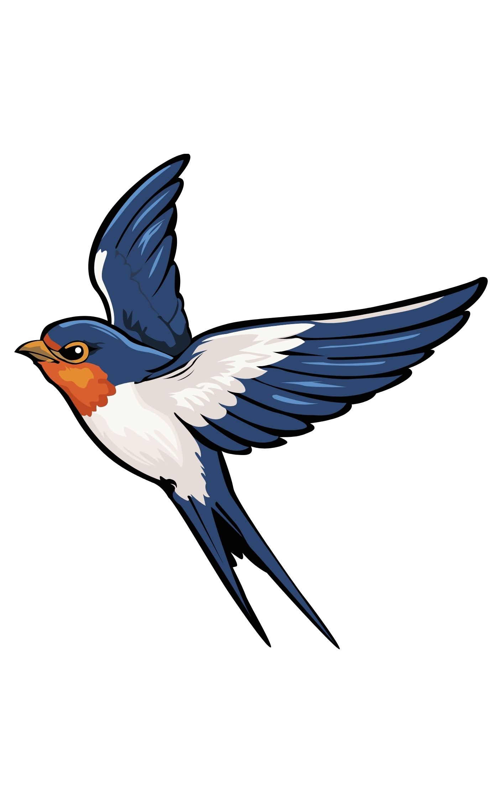

Explore Costa Rica
Welcome to one of the most biodiverse countries on Earth. Discover volcanoes, tropical rainforests, Caribbean and Pacific beaches, national parks, incredible wildlife and unforgettable adventures.
Why Visit Costa Rica?
Costa Rica protects nearly thirty percent of its territory through national parks and biological reserves. Whether you dream of hiking volcanoes, watching sea turtles, relaxing on white-sand beaches or exploring tropical rainforests, every journey becomes an unforgettable experience.
Costa Rica is internationally recognized as one of the world's premier ecotourism destinations. Despite covering only a tiny fraction of the planet's land area, it shelters an extraordinary percentage of global biodiversity. Visitors can experience active volcanoes, cloud forests, pristine beaches, mangroves, coral reefs, rivers and mountain ranges all within a few hours of travel. The country's commitment to conservation, sustainability and renewable energy has made it a model for responsible tourism while offering visitors safe, authentic and memorable adventures.
Costa Rica at a Glance
Some incredible facts that make Costa Rica one of the most fascinating travel destinations in the world.
🌿 6%
Home to nearly six percent of the world's biodiversity.
🌋 30+
National Parks and protected biological reserves.
🦥 900+
Bird species and extraordinary wildlife.
🏖 Two Oceans
Pacific Ocean and Caribbean Sea in a single country.
Discover Costa Rica
Choose your next adventure through some of the country's most spectacular natural attractions.

Volcanoes
Discover majestic volcanoes including Arenal, Poás, Irazú and Rincón de la Vieja.

Beaches
From Caribbean paradise to Pacific sunsets, explore hundreds of spectacular beaches.

Wildlife
Meet sloths, monkeys, toucans, scarlet macaws, sea turtles and countless other species.

Rainforests
Walk through lush tropical forests filled with waterfalls, rivers and exotic plants.
Unforgettable Experiences
Every region of Costa Rica offers unique adventures, from volcanoes and cloud forests to world-class surfing and wildlife encounters.

Ziplining
Fly above the rainforest canopy and experience breathtaking panoramic views.

Surfing
Costa Rica is home to some of the world's best surf beaches for beginners and professionals alike.

Rafting
Navigate exciting rivers through lush tropical landscapes with experienced local guides.

Hiking
Explore volcanoes, waterfalls and cloud forests through hundreds of scenic trails.
Featured National Parks
Costa Rica protects nearly one third of its territory through national parks and biological reserves, making it one of the world's leading ecotourism destinations.

Manuel Antonio
White-sand beaches, rainforest trails and abundant wildlife including sloths, capuchin monkeys and toucans.

Corcovado
Often described as one of the most biologically intense places on Earth, home to jaguars, tapirs and scarlet macaws.

Tortuguero
Explore canals surrounded by rainforest and witness one of the world's most important sea turtle nesting sites.

Monteverde
Walk above the clouds through hanging bridges and discover extraordinary plants and wildlife.
The Great Volcanoes
Costa Rica's volcanic mountain ranges have shaped the country's landscapes, ecosystems and geothermal wonders.

Arenal Volcano
One of the world's most iconic volcanoes, surrounded by hot springs, rainforest and adventure activities.

Poás Volcano
Visit one of the largest active volcanic craters on the planet, famous for its turquoise acidic lake.

Irazú Volcano
On clear days visitors can admire both the Pacific Ocean and Caribbean Sea from the summit.

Rincón de la Vieja
Discover bubbling mud pots, waterfalls, volcanic fumaroles and beautiful hiking trails.
Costa Rica Gallery
A glimpse of the incredible landscapes waiting for you.


The Best Beaches
Whether you seek surfing, relaxation or tropical scenery, Costa Rica offers some of the world's most spectacular coastlines.

Tamarindo
One of Costa Rica's most famous beach towns, perfect for surfing, restaurants and nightlife.

Playa Conchal
Crystal-clear waters and white shells make this beach one of the country's most beautiful destinations.

Santa Teresa
A paradise for surfers, digital nomads and visitors looking for spectacular Pacific sunsets.

Puerto Viejo
Experience the Caribbean side of Costa Rica with vibrant culture, wildlife and beautiful beaches.
Extraordinary Wildlife
Costa Rica is home to thousands of fascinating species that thrive in its protected ecosystems.

Sloths
Meet Costa Rica's most beloved animal while exploring the rainforest.

Toucans
Their colorful beaks have become one of the country's most recognizable symbols.

Scarlet Macaws
These magnificent birds fill Costa Rica's skies with brilliant colors.

Sea Turtles
Witness unforgettable nesting events along both the Caribbean and Pacific coasts.
Plan Your Next Adventure
Costa Rica offers experiences for every traveler. Whether you're searching for adventure, relaxation, photography, wildlife, gastronomy or sustainable tourism, you'll discover unforgettable destinations across every region of the country. Explore volcanoes, hike through cloud forests, kayak in tropical canals, observe exotic wildlife and enjoy warm hospitality while supporting one of the world's leading conservation success stories.